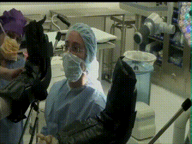
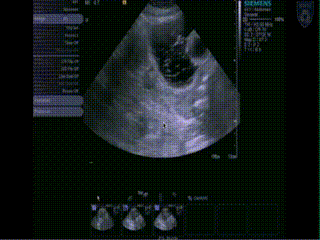
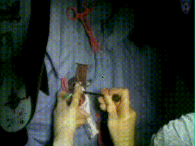
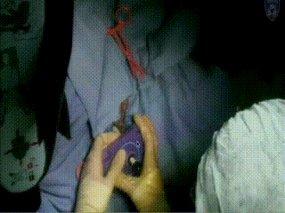
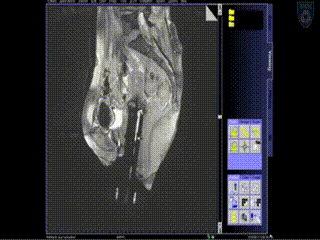
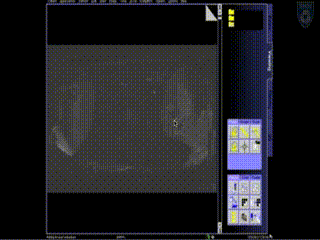
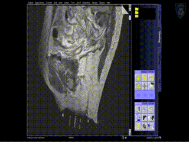
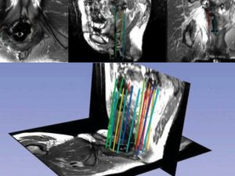
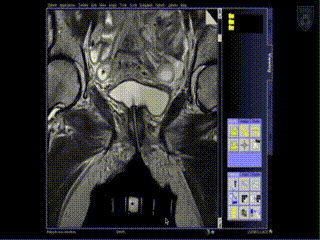

Patients treated in AMIGO often have very large tumors that may have spread to surrounding structures. Image-guided interstitial catheter placement increases the likelihood that the catheters will be properly placed in the center of the tumor, thereby improving radiation dosimetry. The physician is able to see the tumor with much greater accuracy using MRI in AMIGO than is possible with other imaging modalities and it allows direct placement of an interstitial catheter into the tumor and away from the normal tissue, minimizing future toxicity to the patient. In the case of larger tumors that often require insertion of multiple catheters, each area of the tumor can be treated with the appropriate dose. AMIGO, with its unique integration of surgery, PET/CT, MRI, and brachytherapy, offers many possibilities for translational research with the potential for improving patient care for patients with gynecologic tumors. In terms of MRI, AMIGO facilitates assessment of potentially biologically active residual regions of tumors. In the laboratory, biopsied tissue obtained during AMIGO imaging allows correlation between imaging and pathology. The ultimate goal is to use these novel approaches to increase disease-free intervals and minimize long-term toxicities frequently associated with radiation treatment.
The workflow shown below is for a patient who was diagnosed using PET/CT and MR with a 0.5 cm mass in the cervix, extending back toward the pelvic side wall. The tumor is fixed at the side wall, causing a hydronephrosis (stage IIIb cervical cancer). On the basis of the images, the patient is an ideal candidate for the AMIGO suite because of the tumor location and the difficulty in accessing the tumor using standard approaches.
Gynecologic HDR Brachytherapy Workflow in AMIGO

Initial Assessment
The patient is brought into the main operating room and placed in dorsal lithotomy position. The perineum is prepped and draped. A speculum is then inserted to visualize the cervix and the cervical os. A clinical examination is performed.

Applicator Placement
A catheter is placed in the bladder, clamped, and the bladder filled with 150-200 cc. of saline, allowing a clear ultrasound picture of the intracervical and intrauterine canal. A single stitch at the cervical apex may be placed to pull the cervix towards the surgeon/radiologist to allow easier insertion to ensure that the cervix does not extend into the abdomen. The process of dilating the cervix using serial dilators begins, using an intrauterine sound to measure the length of the intrauterine canal. The required length of the tandem is determined and the applicator is inserted. The tandem holds the radiation seeds; treatment will be delivered later the same day in a shielded for radiation brachytherapy suite.

Applicator Placement
Following dilation, the tandem is easily inserted and verified through US as in the proper position at the top of the fundus and inside the center of the cervix. An obturator is then placed over the tandem.

Applicator Placement
The template is then placed. It rests on the surface of the patient’s perineum and is sutured at four corners.

Intraoperative Imaging
The patient is brought into the MR room on a MR compatible table top that is unique to the AMIGO suite. She is placed on the AMIGO MR table following transfer and brought through to the back of the 3T MR. A series of MR images are taken to delineate the tumor seen with the tandem in place. Then, a series of interstitial brachytherapy catheters are inserted, directly into the tumor, as seen on the MR.

Intraoperative Imaging
A series of MR images are obtained. Location of the needles is determined on an axial sequence to determine whether it covers the lateral extension to the side wall.

Intraoperative Imaging
Additional needles are placed to ensure accurate coverage. A real-time series of approximately 1 minute T2W monitoring catheter sequences is used to confirm adequate placement. Physicians view the scans on the MR imaging screens outside of the room. MR screens inside the MR room confirm the placement of additional insertion, as needed.

Intraoperative Imaging
Upon insertion of all the needles and confirmation of adequate placement, a final series of MR images is obtained, allowing the beginning of contouring the tumor volume on the MR.

Treatment
The patient is brought to the CT and a quick CT scan obtained for verification of the needle locations. The CT images assist the radiation physicist with digitization of the catheters for radiation treatment planning. Upon completion of treatment planning, the radiation sources are inserted in a dedicated brachytherapy suite in the Department of Radiation Oncology.
Book Chapter
Robert A. Cormack. Image-Guided Brachytherapy. Ch.26. Part IV. Image-Guided Therapy Delivery Systems. In Ferenc A. Jolesz (Ed.), Intraoperative Imaging and Image-Guided Therapy. New York, NY: Springer; 2014. pp. 387-98.
Recent Publications
- Zaffino P, Pernelle G, Mastmeyer A, Mehrtash A, Zhang H, Kikinis R, Kapur T, Spadea MF. Fully Automatic Catheter Segmentation in MRI with 3D Convolutional Neural Networks: Application to MRI-guided Gynecologic Brachytherapy. Phys Med Biol. 2019;64 (16) :165008. PMID: 31272095; PMC6726393.
- de Arcos J, Schmidt EJ, Wang W, Tokuda J, Vij K, Seethamraju RT, Damato AL, Dumoulin CL, Cormack RA, Viswanathan AN. Prospective Clinical Implementation of a Novel Magnetic Resonance Tracking Device for Real-Time Brachytherapy Catheter Positioning. Int J Radiat Oncol Biol Phys. 2017;99 (3) :618-26. PMID: 28843373; PMC5720929.
- Kamran SC, Manuel MM, Catalano P, Cho L, Damato AL, Lee LJ, Schmidt EJ, Viswanathan AN. MR- versus CT-based High-dose-rate Interstitial Brachytherapy for Vaginal Recurrence of Endometrial Cancer. Brachytherapy. 2017;16 (6) :1159-68. PMID: 28823395; PMC5698152.
- Mastmeyer A, Pernelle G, Ma R, Barber L, Kapur T. Accurate Model-based Segmentation of Gynecologic Brachytherapy Catheter Collections in MRI-images. Med Image Anal. 2017;42 :173-88. PMID: 28803217; PMC5654713.
- Ciris PA, Balasubramanian M, Damato AL, Seethamraju RT, Tempany-Afdhal CM, Mulkern RV, Viswanathan AN. Characterizing Gradient Echo Signal Decays in Gynecologic Cancers at 3T using a Gaussian Augmentation of the Monoexponential (GAME) Model. J Magn Reson Imaging. 2016;44 (4) :1020-30. PMID: 26971387; PMC5018920.
- Wang W, Dumoulin CL, Viswanathan AN, Tse ZTH, Mehrtash A, Loew W, Norton I, Tokuda J, Seethamraju RT, Kapur T, et al. Real-time Active MR-tracking of Metallic Stylets in MR-guided Radiation Therapy. Magn Reson Med. 2015;73 (5) :1803-11. PMID: 24903165; PMC4257908.
- Tanderup K, Viswanathan AN, Kirisits C, Frank SJ. Magnetic Resonance Image Guided Brachytherapy. Semin Radiat Oncol. 2014;24 (3) :181-91. PMID: 24931089; PMC4147854.
- Mehrtash A, Damato A, Pernelle G, Barber L, Farhat N, Viswanathan A, Cormack R, Kapur T. EM-Navigated Catheter Placement for Gynecologic Brachytherapy: An Accuracy Study. Proc SPIE Int Soc Opt Eng. 2014;9036 :90361F. PMID: 25076828; PMC4112824.
- Pernelle G, Mehrtash A, Barber L, Damato A, Wang W, Seethamraju RT, Schmidt E, Cormack RA, Wells III WM, Viswanathan A, et al. Validation of Catheter Segmentation for MR-guided Gynecologic Cancer Brachytherapy. Med Image Comput Comput Assist Interv. 2013;16 (Pt 3) :380-7. PMID: 24505784; PMC4005335.
- Kapur T, Egger J, Damato A, Schmidt EJ, Viswanathan AN. 3T MR-guided Brachytherapy for Gynecologic Malignancies. Magn Reson Imaging. 2012;30 (9) :1279-90. PMID: 22898699; PMC3468320.
Content carried over from https://ncigt.org/gynecologic-hdr-brachytherapy/.